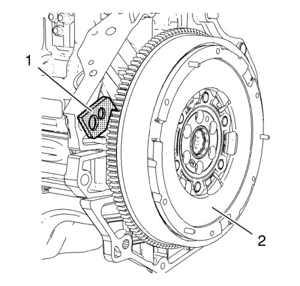
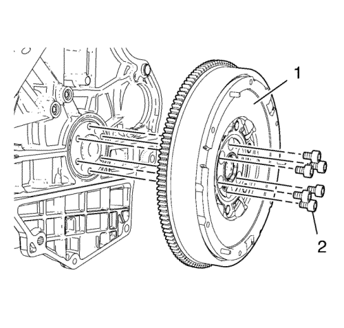

Sustitución del volante motor — 1.4L LUH y LUJ
Herramientas especiales
| • | EN-470-B Llave de apriete angular |
| • | EN-652 Herramienta de bloqueo del volante motor |
Si desea informarse sobre herramientas regionales equivalentes, consultar Herramientas especiales .
Procedimiento de desmontaje
- Abra el capó.
- Quite el plato de presión y el plato conducido del embrague del volante motor. Consultar Sustitución del plato de presión del embrague y del disco de embrague → LUJ. LUW, 2H0 - MF3, MZ0, MZ4, MR5 → D33 → D16 y D20 .

- Monte la herramienta de retención de volantes motores EN-652 (1) para fijar el volante motor (2).

- Extraiga y DESECHE los 6 tornillos del volante motor (2).
- Extraiga el volante motor (1).
Procedimiento de montaje
- Limpie los 6 orificios roscados. Repáselos con un macho de roscar si es necesario.
- Monte el volante motor (1).
- Monte 6 tornillos del volante motor NUEVOS (2).
- Monte la herramienta de retención de volantes motores EN-652 (1) para fijar el volante motor (2).
Precaución:Consulte Precaución con las fijaciones en la sección Prólogo.
Precaución:Consulte Precaución de la fijación del par angular y estiramiento en la sección Prólogo.
- Apriete los 6 tornillos del volante del motor en cruz a 60 N·m (44 lib. pie).
- Apriete los 6 pernos del volante motor en cruz otros 45°, con la llave EN-470-B.
- Apriete los 6 pernos del volante motor en cruz otros 15°, con la llave EN-470-B.
- Monte el plato de presión y el plato conducido del embrague. Consultar Sustitución del plato de presión del embrague y del disco de embrague → LUJ. LUW, 2H0 - MF3, MZ0, MZ4, MR5 → D33 → D16 y D20 .
- Monte el cambio. Consultar Sustitución del plato de presión del embrague y del disco de embrague → LUJ. LUW, 2H0 - MF3, MZ0, MZ4, MR5 → D33 → D16 y D20 .
- Cierre el capó.
| © Copyright Chevrolet. All rights reserved |